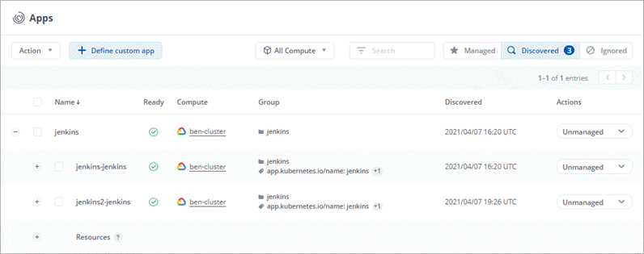
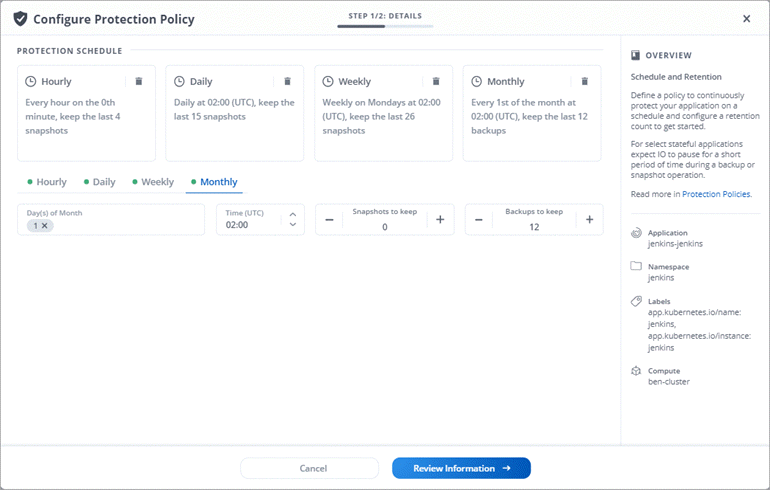
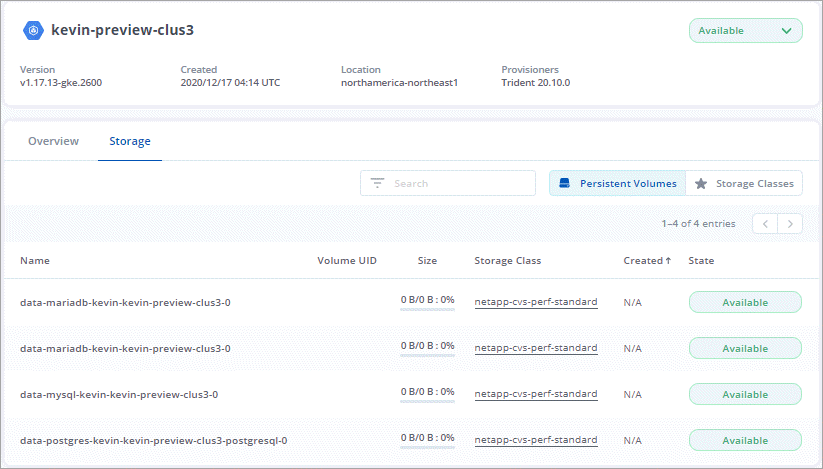
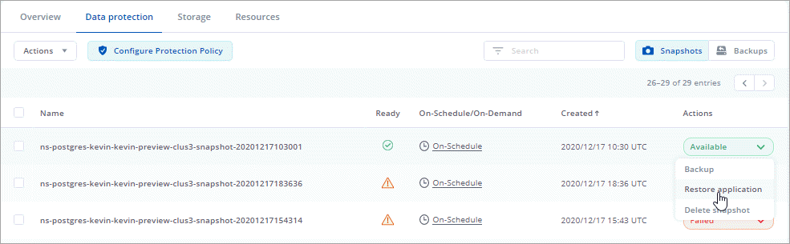

What’s new with Astra Control Service
NetApp periodically updates Astra Control Service to bring you new features, enhancements, and bug fixes.
5 Aug 2021
This release includes the following new features and enhancements.
Astra Control Center
Astra Control is now available in a new deployment model. Astra Control Center is self-managed software that you install and operate in your data center so that you can manage Kubernetes application lifecycle management for on-premise Kubernetes clusters.
Bring your own bucket
You can now manage the buckets that Astra uses for backups and clones by adding additional buckets and by changing the default bucket for the Kubernetes clusters in your cloud provider.
2 June 2021
This release includes bug fixes and the following enhancements to Google Cloud support.
Support for shared VPCs
You can now manage GKE clusters in GCP projects with a shared VPC network configuration.
Persistent volume size for the CVS service type
Astra Control Service now creates persistent volumes with a minimum size of 300 GiB when using the CVS service type.
Support for Container-Optimized OS
Container-Optimized OS is now supported with GKE worker nodes. This is in addition to support for Ubuntu.
15 Apr 2021
This release includes the following new features and enhancements.
Support for AKS clusters
Astra Control Service can now manage apps that are running on a managed Kubernetes cluster in Azure Kubernetes Service (AKS).
REST API
The Astra Control REST API is now available for use. The API is based on modern technologies and current best practices.
Annual subscription
Astra Control Service now offers a Premium Subscription.
Pre-pay at a discounted rate with an annual subscription that enables you to manage up to 10 apps per application pack. Contact NetApp Sales to purchase as many packs as needed for your organization—for example, purchase 3 packs to manage 30 apps from Astra Control Service.
If you manage more apps than allowed by your annual subscription, then you’ll be charged at the overage rate of $0.005 per minute, per application (the same as Premium PayGo).
Namespace and app visualization
We enhanced the Discovered Apps page to better show the hierarchy between namespaces and apps. Just expand a namespace to see the apps contained in that namespace.

User interface enhancements
Data protection wizards were enhanced for ease of use. For example, we refined the Protection Policy wizard to more easily view the protection schedule as you define it.

Activity enhancements
We’ve made it easier to view details about the activities in your Astra Control account.
-
Filter the activity list by managed app, severity level, user, and time range.
-
Download your Astra Control account activity to a CSV file.
-
View activities directly from the Compute page or the Apps page after selecting compute or an app.
1 Mar 2021
Astra Control Service now supports the CVS service type with Cloud Volumes Service for Google Cloud. This is in addition to already supporting the CVS-Performance service type. Just as a reminder, Astra Control Service uses Cloud Volumes Service for Google Cloud as the backend storage for your persistent volumes.
This enhancement means that Astra Control Service can now manage app data for Kubernetes clusters that are running in any Google Cloud region where Cloud Volumes Service is supported.
If you have the flexibility to choose between Google Cloud regions, then you can pick either CVS or CVS-Performance, depending on your performance requirements. Learn more about choosing a service type.
25 Jan 2021
We’re pleased to announce that Astra Control Service is now Generally Available. We incorporated a lot of the feedback that we received from the Beta release and made a few other notable enhancements.
-
Billing is now available, which enables you to move from the Free Plan to the Premium Plan. Learn more about billing.
-
Astra Control Service now creates Persistent Volumes with a minimum size of 100 GiB when using the CVS-Performance service type.
-
Astra Control Service can now discover apps faster.
-
You can now create and delete accounts on your own.
-
We’ve improved notifications when Astra Control Service can no longer access Kubernetes compute.
These notifications are important because Astra Control Service can’t manage apps for disconnected compute.
17 Dec 2020 (Beta update)
We primarily focused on bug fixes to improve your experience, but we made a few other notable enhancements:
-
When you add your first Kubernetes compute to Astra Control Service, the object store is now created in the geography where the cluster resides.
-
Details about persistent volumes is now available when you view storage details at the compute level.

-
We added an option to restore an application from an existing snapshot or backup.

-
If you delete a Kubernetes cluster that Astra Control Service is managing, the cluster now shows up in a Removed state. You can then remove the cluster from Astra Control Service.
-
Account owners can now modify the assigned roles for other users.
-
We added a section for billing, which will be enabled when Astra Control Service is released for General Availability (GA).
 Edit on GitHub
Edit on GitHub